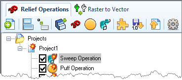

|
This option allows you to align native CAD geometry to the project. |
This option allows you to move the objects or geometry to a specified origin within the project. |
This option allows you to convert native CAD geometry to a relief in the project. |
This option brings up the file open dialog which allows you to select the image files such as gif, bmp and jpg. After a file has been selected, the 3D Relief creation dialog pops up and you can now change the parameters in the dialog to create relief. |
This option brings up the puffed volume creation dialog. This dialog allows you to select two sets of curves (border curves and detail curves) and generates a puffed volume inside the enclosed curve. |
|
This brings up the open dialog which allows you to select shapes (.slb files) that have been previously saved to Shape Library. |
Selecting this button imports operations from VisualART 1.0 to the ART Browser for part file that is currently loaded. |
This button allows you to export the ART geometry (meshes) to VisualCAD. Thus, a mesh can be easily saved in VisualCAD and further used in any downstream applications native to VisualCAD/CAM. |
This button allows you to set preferences such as File Load Options, Display Options, Mesh Export Options, and Closed Mesh Options. |
Toggle material texture visibility on and off. When on, the material texture will display on the part. |
Toggle the display of the Shape Library. When toggled on, the Shape Library will display below the ART Browser. |